第 13 章
影像梯度与边缘侦测
本章共 5 个小节 · 影像梯度 · Sobel · Scharr · Laplacian · Canny
边缘是影像中亮度或颜色变化明显的位置。影像梯度用来描述像素值变化的方向与强度，
OpenCV 提供 Sobel()、Scharr()、Laplacian() 和 Canny() 等函数来检测边缘。
13-1
影像梯度的基础观念
如果一排像素值从暗到亮快速变化，变化最明显的位置通常就是边界。水平边界需要观察垂直方向的变化；
垂直边界则需要观察水平方向的变化。梯度越大，表示该位置越可能是边缘。
观念
边缘检测通常不会只看单一像素，而是用卷积核比较邻域中亮度变化。不同算子使用不同核，输出结果也会不同。
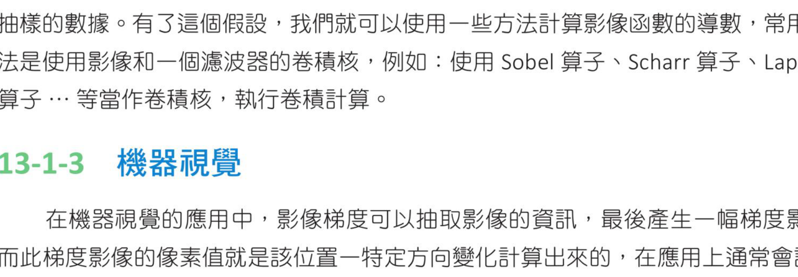
机器视觉常以梯度变化寻找轮廓与边界，参考原书第 13-3 页。
13-2
OpenCV 函数 Sobel()
Sobel 算子使用一阶导数近似，分别计算 x 方向和 y 方向的梯度。
x 方向梯度强调垂直边缘；y 方向梯度强调水平边缘。由于梯度可能出现负值，若输出深度使用 cv2.CV_64F，
通常会再用 convertScaleAbs() 转成可显示的 8 位影像。
dst = cv2.Sobel(src, ddepth, dx, dy, ksize, scale, delta, borderType)
| 参数 | 说明 |
|---|
ddepth | 输出影像深度。若需保留负梯度，常用 cv2.CV_64F。 |
dx | x 方向导数阶数。设为 1 时检测垂直方向变化。 |
dy | y 方向导数阶数。设为 1 时检测水平方向变化。 |
ksize | Sobel 核大小，常用 3、5、7。 |
程序实例 ch13_1.py：convertScaleAbs() 处理负梯度
# ch13_1.py
import cv2
import numpy as np
x = np.array([-17, -65, 136, 100], dtype=np.int16)
dst = cv2.convertScaleAbs(x)
print(dst)
程序实例 ch13_2.py：Sobel x 方向梯度
# ch13_2.py
import cv2
src = cv2.imread("map.jpg")
dst = cv2.Sobel(src, cv2.CV_64F, 1, 0)
cv2.imshow("src", src)
cv2.imshow("dst", dst)
cv2.waitKey(0)
cv2.destroyAllWindows()
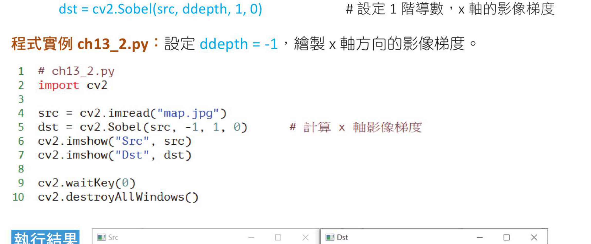
x 方向梯度主要显示垂直线条，参考原书第 13-7 页。
程序实例 ch13_3.py：Sobel x 方向梯度加 convertScaleAbs()
# ch13_3.py
import cv2
src = cv2.imread("map.jpg")
dst = cv2.Sobel(src, cv2.CV_64F, 1, 0)
dst = cv2.convertScaleAbs(dst)
cv2.imshow("src", src)
cv2.imshow("dst", dst)
cv2.waitKey(0)
cv2.destroyAllWindows()
程序实例 ch13_4.py 与 ch13_5.py：Sobel y 方向梯度
# ch13_5.py
import cv2
src = cv2.imread("map.jpg")
dst = cv2.Sobel(src, cv2.CV_64F, 0, 1)
dst = cv2.convertScaleAbs(dst)
cv2.imshow("src", src)
cv2.imshow("dst", dst)
cv2.waitKey(0)
cv2.destroyAllWindows()
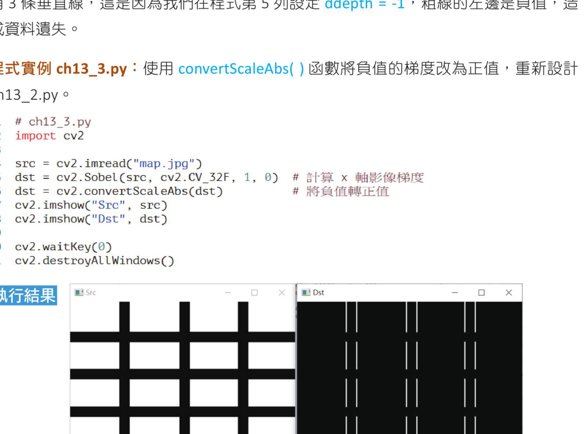
y 方向梯度主要显示水平线条，参考原书第 13-8 页。
程序实例 ch13_6.py：合成 x/y 方向梯度
# ch13_6.py
import cv2
src = cv2.imread("map.jpg")
dstx = cv2.Sobel(src, cv2.CV_64F, 1, 0)
dsty = cv2.Sobel(src, cv2.CV_64F, 0, 1)
dstx = cv2.convertScaleAbs(dstx)
dsty = cv2.convertScaleAbs(dsty)
dst = cv2.addWeighted(dstx, 0.5, dsty, 0.5, 0)
cv2.imshow("src", src)
cv2.imshow("dstx", dstx)
cv2.imshow("dsty", dsty)
cv2.imshow("dst", dst)
cv2.waitKey(0)
cv2.destroyAllWindows()
程序实例 ch13_7.py / ch13_8.py / ch13_8_1.py：真实影像 Sobel 比较
# ch13_7.py
import cv2
src = cv2.imread("lena.jpg")
dstx = cv2.Sobel(src, cv2.CV_64F, 1, 0)
dsty = cv2.Sobel(src, cv2.CV_64F, 0, 1)
dstx = cv2.convertScaleAbs(dstx)
dsty = cv2.convertScaleAbs(dsty)
dst = cv2.addWeighted(dstx, 0.5, dsty, 0.5, 0)
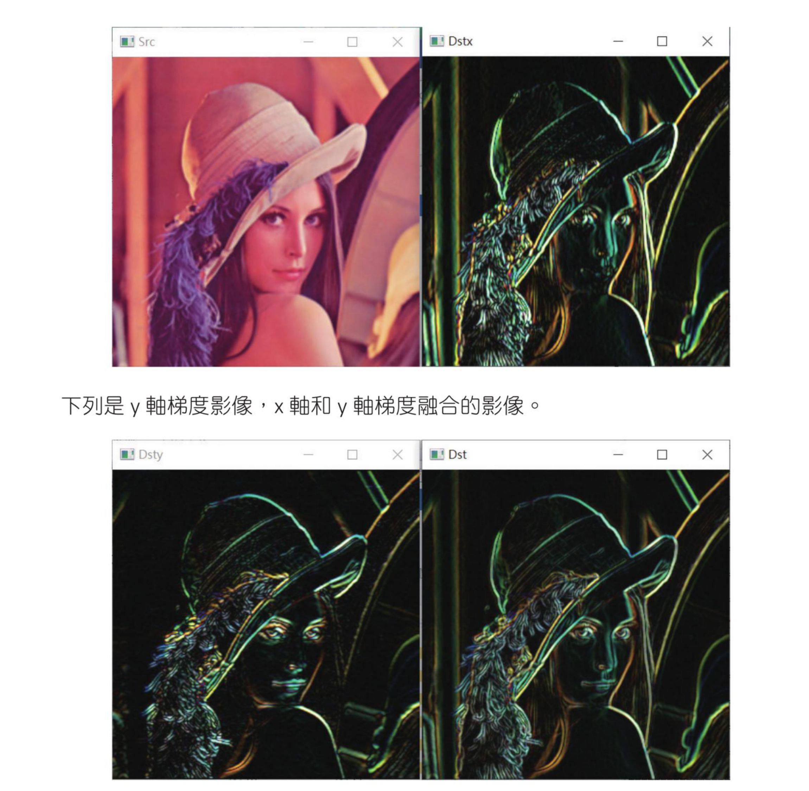
分别显示原图、x 方向、y 方向与合成梯度结果，参考原书第 13-11 页。
13-3
OpenCV 函数 Scharr()
Scharr 算子可以看作 Sobel 的强化版本，常用于 3x3 核大小下的边缘检测。
它对梯度变化较敏感，输出的边缘通常更明显。函数参数与 Sobel 接近，但没有 ksize 参数。
dst = cv2.Scharr(src, ddepth, dx, dy, scale, delta, borderType)
程序实例 ch13_9.py：Scharr 边缘侦测
# ch13_9.py
import cv2
src = cv2.imread("snow.jpg")
dstx = cv2.Scharr(src, cv2.CV_64F, 1, 0)
dsty = cv2.Scharr(src, cv2.CV_64F, 0, 1)
dstx = cv2.convertScaleAbs(dstx)
dsty = cv2.convertScaleAbs(dsty)
dst = cv2.addWeighted(dstx, 0.5, dsty, 0.5, 0)
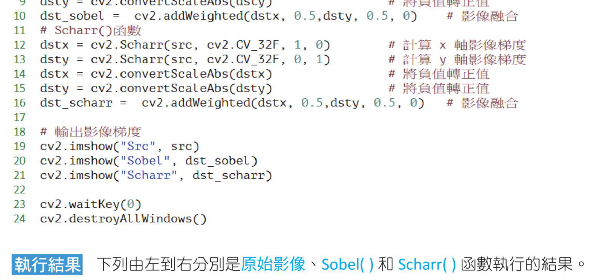
Scharr 对雪景图边缘的增强效果，参考原书第 13-13 页。
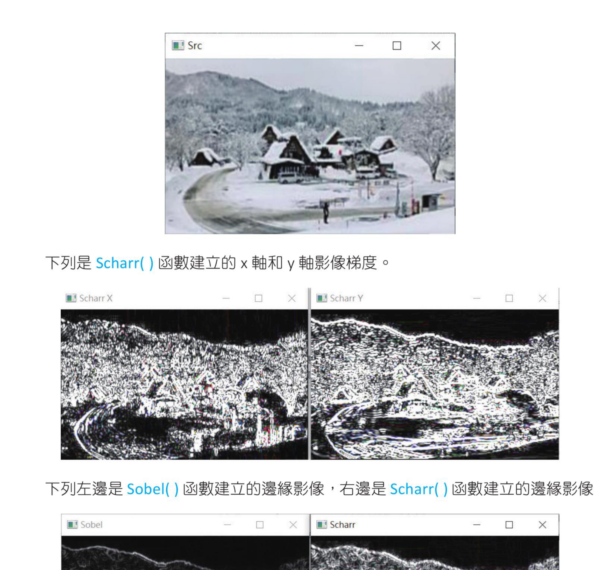
同一影像上比较 Sobel 与 Scharr 的边缘强度，参考原书第 13-15 页。
13-4
OpenCV 函数 Laplacian()
Laplacian 使用二阶导数检测边缘，会同时响应多个方向的强度变化。和 Sobel、Scharr 分别计算 x/y 方向不同，
Laplacian 更像是一次取得综合边缘信息，但也更容易受到噪声影响。
dst = cv2.Laplacian(src, ddepth, ksize, scale, delta, borderType)
程序实例 ch13_10.py：Laplacian 边缘侦测
# ch13_10.py
import cv2
src = cv2.imread("map.jpg")
dst = cv2.Laplacian(src, cv2.CV_64F)
dst = cv2.convertScaleAbs(dst)
cv2.imshow("src", src)
cv2.imshow("Laplacian", dst)
cv2.waitKey(0)
cv2.destroyAllWindows()
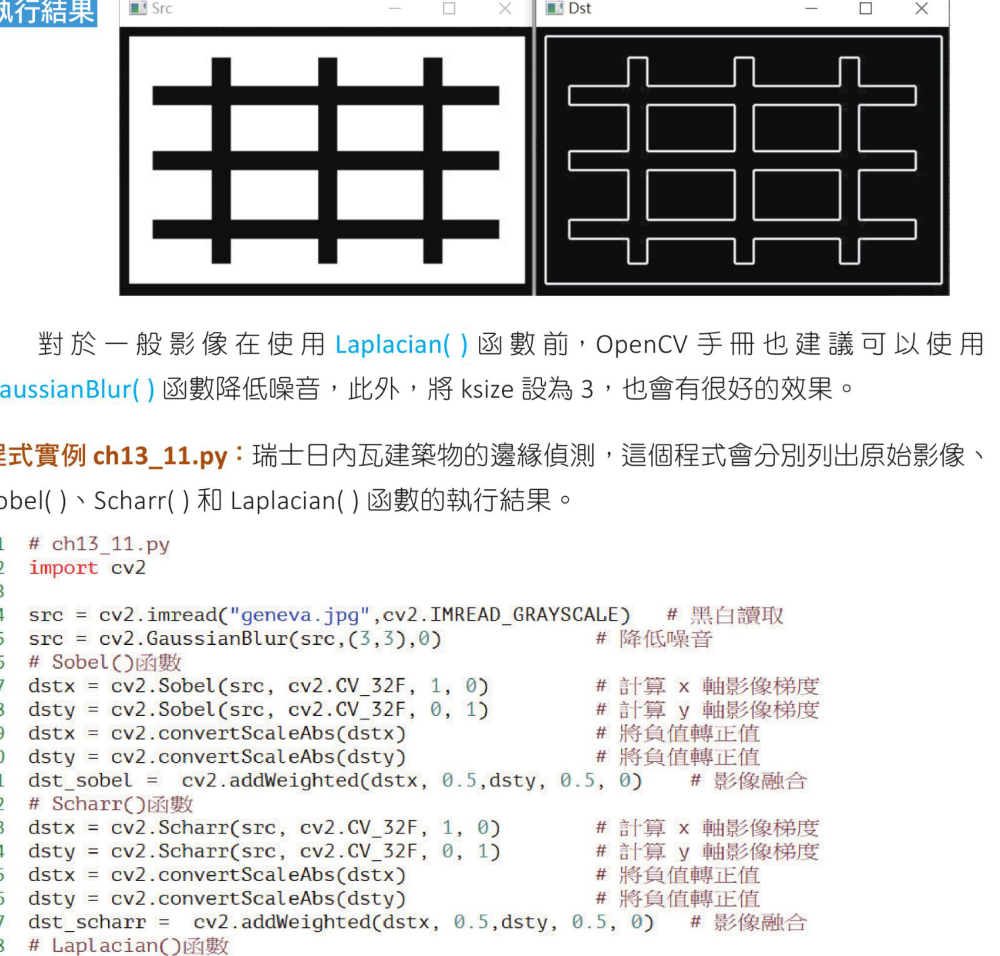
Laplacian 在网格图上能同时显示水平与垂直边缘，参考原书第 13-18 页。
程序实例 ch13_11.py：Sobel、Scharr、Laplacian 综合比较
# ch13_11.py
import cv2
src = cv2.imread("geneva.jpg")
sobel = cv2.Sobel(src, cv2.CV_64F, 1, 0)
scharr = cv2.Scharr(src, cv2.CV_64F, 1, 0)
laplacian = cv2.Laplacian(src, cv2.CV_64F)
sobel = cv2.convertScaleAbs(sobel)
scharr = cv2.convertScaleAbs(scharr)
laplacian = cv2.convertScaleAbs(laplacian)
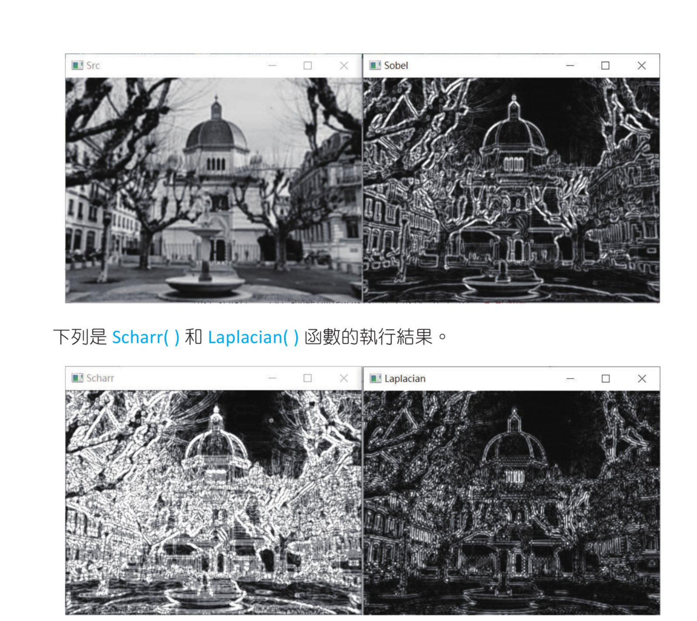
建筑图像上比较 Sobel、Scharr 与 Laplacian 的边缘表现，参考原书第 13-19 页。
13-5
Canny 边缘侦测
Canny 是多阶段边缘检测方法，通常包含去噪、计算梯度、非极大值抑制和双阈值连接等步骤。
它比单纯梯度算子更完整，输出常是较细且连续的二值边缘图。
Noise Reduction：先降低噪声，避免杂讯被误判为边缘。
Finding Intensity Gradient：计算梯度强度和方向。
Non-maximum Suppression：只保留局部最大梯度，压细边缘。
Hysteresis Thresholding：用高低阈值连接强边缘与弱边缘。
edges = cv2.Canny(image, threshold1, threshold2, apertureSize, L2gradient)
| 参数 | 说明 |
|---|
threshold1 | 低阈值。 |
threshold2 | 高阈值。 |
apertureSize | Sobel 内核大小，默认 3。 |
L2gradient | 是否使用更精确的 L2 范数计算梯度。 |
程序实例 ch13_12.py：不同阈值的 Canny 结果
# ch13_12.py
import cv2
src = cv2.imread("lena.jpg", cv2.IMREAD_GRAYSCALE)
dst1 = cv2.Canny(src, 50, 100)
dst2 = cv2.Canny(src, 50, 200)
cv2.imshow("src", src)
cv2.imshow("minVal=50, maxVal=100", dst1)
cv2.imshow("minVal=50, maxVal=200", dst2)
cv2.waitKey(0)
cv2.destroyAllWindows()
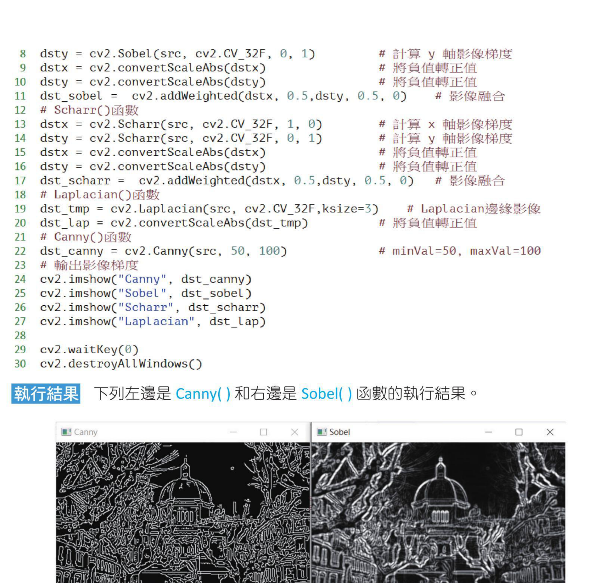
阈值不同会影响保留的边缘数量，参考原书第 13-23 页。
程序实例 ch13_13.py：加入 Canny 的算子比较
# ch13_13.py
import cv2
src = cv2.imread("geneva.jpg", cv2.IMREAD_GRAYSCALE)
sobel = cv2.convertScaleAbs(cv2.Sobel(src, cv2.CV_64F, 1, 0))
scharr = cv2.convertScaleAbs(cv2.Scharr(src, cv2.CV_64F, 1, 0))
laplacian = cv2.convertScaleAbs(cv2.Laplacian(src, cv2.CV_64F))
canny = cv2.Canny(src, 50, 100)
1. 建立 300x300 黑底白圆影像，分别使用 Sobel、Scharr、Laplacian 和 Canny 取得边缘。
2. 使用 eagle.jpg，比较 Sobel、Scharr 与 Laplacian 的输出。
3. 使用 macau.jpg，调整 Canny 的 threshold1 与 threshold2，观察边缘数量变化。
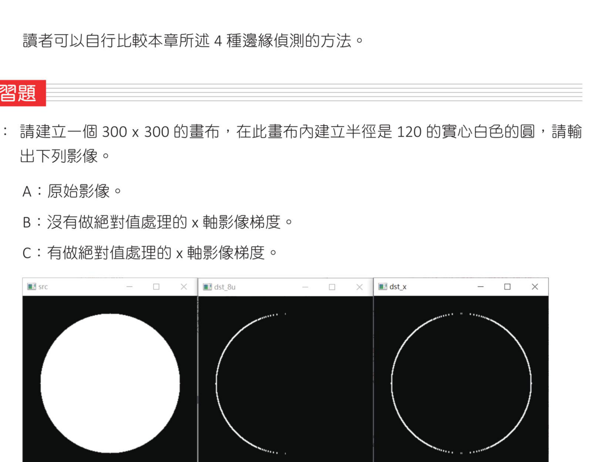
白圆边缘侦测参考图，参考原书第 13-24 页。
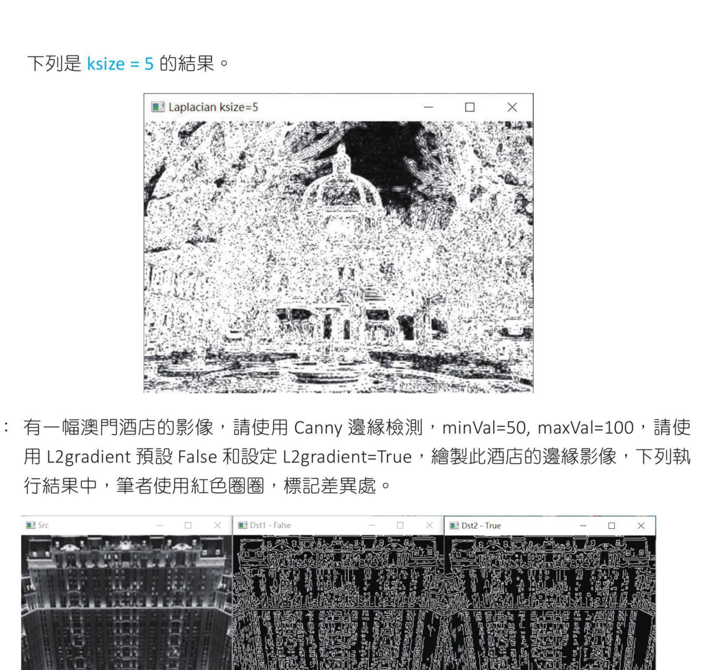
鹰与澳门影像的边缘侦测参考图，参考原书第 13-26 页。